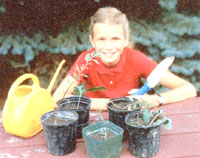
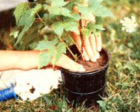
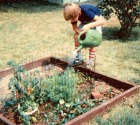
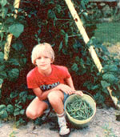

MOTHER feels strongly that youths can be creative "doers," working toward more ecological and self-reliant lifestyles . . . . whether their tasks be raising chickens on a farm or maintaining rooftop container gardens in the city. To support the endeavors of our often overlooked "underage" citizens, we're glad to publish well-written articles from younger children and teenagers concerning projects they've undertaken. However, we recommend that all young authors query (that is, send us a letter telling about the story they'd like to do) before writing a full article. Address inquiries to Mother's Children, THE Mother Earth News, 105 Stoney Mountain Rd., Hendersonville, NC 28791.
My name is Amy Johnson. I'm 11 years old now. Two years ago, my family bought a lawn and garden center in Kentucky. Being around so many trees, houseplants, flowers, and shrubs, I soon learned to like them a lot. I also learned how to grow plants from seed and to start new plants from cuttings (stems that have been cut off a plant).
Then it dawned on me I could have a garden of my own from cuttings I rooted myself! I decided to raise my plants in pots, since we didn't have any spare room in the garden for me to use. I started with some mum stems that my parents had trimmed off. I rooted those and soon I had some mums of my own. Then I started some other cuttings, too.
A few days later, I happened to find a few baby plants in the store that had sprouted accidentally. My sister Becky and I decided we could dig these up and pot them, too. So we went plant hunting around the store.
By the end of the day, we had found about 25 baby plants. Becky helped me put them in polystyrene cups and poke drainage holes in the bottoms. We kept looking, and by the end of the week we had found and potted 70 plants.
After a while, we decided we'd found most of the baby plants in the store. Then Becky suggested we look for more around home. Why, yes! That was a good idea. We found them under shrubs, between trees, everywhere! Becky and I dug up junipers, euonymous, many varieties of cotoneaster, and hen and chickens. We even got a a palm tree that a teacher threw out the window at a school! By wintertime (about two and a half months later), we'd collected about 150 plants.
Maybe you'd like to try to have a garden of your own like mine. If so, when you dig up seedlings, make sure you put them in pots that are large enough for the plants and that have holes for drainage. But when you root plants from cuttings, remember to use little pots or cups that do not have holes, so the cuttings will stay moist.
Here's how to start plants from cuttings:
[1] First, cut a stem off a plant that's too long or bushy. Be sure to cut the stem at a slant (to help it root easier) with a sharp knife (to make a clean cut). You must use a fleshy green stem, not a woody one. Begonias, impatiens, pink polka-dots, yews, geraniums, coleus, and chrysanthemums are all good plants to root.
[2] Dip the cut end into rooting hormone. You can buy some rooting hormone at most nurseries or garden centers.
[3] Put the stem in a soil mix in a small pot. [EDITOR'S NOTE: You'll want to use a light mix for this. A good commercial soil mix . . . a "homemade" combination of two parts clean topsoil, one part peat moss, and one part coarse sand . . . or even plain vermiculite should work. However, if you use vermiculite-which has no nutrients you'll have to transfer the plant to a soilbased medium as soon as it roots.]
[4] Water it. Be careful how you water, though. You need to keep the plant moist so it will root, but not so wet that the bottom starts to rot. You'll have to check the moisture every day, and water every time the dirt feels dry. Put your finger in it to tell.
[5] Set the plant in the shade for a couple of days. It'll probably wilt for a few days, but then, if it's rooting, it should get fully colored and healthy-looking. Remember, not every cutting you take will root. Just keep trying.
It's not hard to start cuttings or to dig up seedlings you find. And you can grow them in pots or in the ground. That way, you can have a whole garden . . . for nothing!
By Ben Roth
Photos by Denise Roth
My name is Ben Roth. I live in Dillsburg, Pennsylvania. Two summers ago I decided to make my sandbox into a garden, because I was too big to play in it anymore.
First I had to get the soil ready. I hoed and dug up the dirt and sand that were in the sandbox. Then I had to get more dirt from my mom and dad's garden because there was too much sand and not enough dirt in my sandbox.
Next I decided what to plant. I chose carrots, peanuts, strawberries, onions, and cherry tomatoes because those plants are supposed to do well in sandy soil. (I didn't have to buy all my plants and seeds, but if I'd had to, it would have cost about $6.65: $1.30 for two cherry tomato seedlings, 85 cents for carrot seeds, $1.00 for five strawberry plants, $3.00 for four peanut plants, and 50 cents for onion sets.)
My first big problem was with rabbits. They ate many of my peanuts and carrots, so I had to put a fence around these plants to keep the rabbits from eating more. I made a big mistake by not putting up a fence in the beginning!
My next problem was the drought. That summer was very dry in Dillsburg, so I had to water my garden a lot (almost every day).
Another problem was the weeds that threatened to take over the garden. I had to pull weeds at least once every two weeks. Sometimes it was hard to tell which were weeds and which were garden plants. Also, I had to thin out my onions and carrots because they were growing too close together. Then the plants that were left could grow bigger.
The most fun of all was harvesting. First I pulled out some carrots and spring (or small) onions. When the cherry tomatoes turned red, I picked them. Later I pulled out the bigger onions and carrots and then the peanuts. The sandy soil was especially good for the carrots and onions. (I didn't get any strawberries, because I'd just transplanted them and they needed another season to mature.)
I'm going to plant my sandbox garden again this year. It will be a lot of hard work, but it will be a lot of fun, too. Anybody who has an old sandbox around can turn it into a flower or vegetable garden for just a little bit of money and some time. Try it!
This past year I decided to make a bean house out of an old swing set as well as raising my sandbox garden.
To make my bean house I bought a cord trellis for about $3.00 and pole bean seeds for $1.29. My dad and I moved the swing set's frame into the garden early in the spring, and I got the ground ready by digging it up. Later, we put the trellis up, dug a shallow trench, planted the beans, and waited for them to grow.
I planted the beans on June 6, and they sprouted on June 11. The vines really took off after that! We first picked beans on August 5. I got four quarts. We picked again on August 11, 19, 29, and September 15. Altogether, we harvested about 20 quarts of green beans. There were still more beans out on the vines, but my mom was sick of freezing and canning, so we left some to dry for seeds for next year.
My bean house also was a birdhouse! One time I went back to look at my garden and I heard chirping. When I got closer, I saw a wren fly into the crossbar of my bean house. She flew back and forth to it a lot. Later I could hear baby birds chirping in the nest she had built there. The baby birds were safe in the bean house, since our cats couldn't climb the poles to get them.
My bean house worked so well that my family plans on making it a permanent part of our garden and growing all our beans on it. It was a good bean tower, a neat place to hide, and a birdhouse, too!
Amy Johnson created a garden of over 150 plants for free!-by rooting her own cuttings and transplanting wild seedlings. She even transplanted small trees (like this young maple) she found growing in her yard!
|
Milton Johnson Amy Johnson created a garden of over 150 plants ?for free!by rooting her own cuttings and transplanting wild seedlings. |
 Milton Johnson She even transplanted small trees (like this young maple) she found growing in her yard! |
 Milton Johnson Ben Roth turned his sandbox into garden |
|
 Milton Johnson his own swing set into a trellis for pole beans! |
 |
|